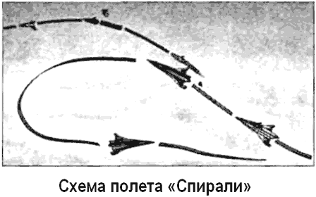
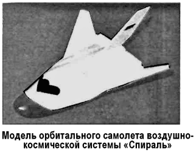

Авиационно-космическая система «Спираль»
Еще с 1962 года ОКБ-155 Артема Микояна в инициативном порядке проводило исследования комбинированных воздушно-космических систем.
По мнению «микояновцев», замена баллистической ракеты на самолет-носитель обеспечивала широкую возможность выбора координат точки запуска, исключая привязку к сложному и дорогому наземному стартовому комплексу.
Кроме этого отпадала необходимость в создании «зон отчуждения» и выбора траектории выведения. Все это позволяло значительно расширить возможности военного использования космических систем и выглядело адекватным ответом на программу «Дайна-Сор». 17 октября 1964 года, через сутки после свержения Никиты Хрущева, была создана комиссия по расследованию деятельности ОКБ-52. 19 октября Владимиру Челомею позвонил главком ВВС Константин Вершинин и сообщил, что, подчиняясь приказу, вынужден передать все материалы по космопланам в ОКБ Микояна.
После передачи проектов Павла Цыбина по «ПКА» из ОКБ-1 Сергея Королева и по ракетопланам серии «Р» из ОКБ-52 Владимира Челомея в бюро Артема Микояна началась разработка аэрокосмической темы под условным наименованием «Спираль».
Официально создание воздушно-космической системы «Спираль» («Тема 50», позднее — «105–205») было инициировано приказом Министерства авиационной промышленности от 30 июля 1965 года. Число «50» в названии теми символизировало приближающуюся 50-ю годовщину Великого Октября, когда должны были состояться первые дозвуковые испытания прототипа.
В конце 1965 года вышло постановление ЦК КПСС и Совета министров СССР о создании Воздушно-орбитальной системы (ВОС) — экспериментального комплекса пилотируемого орбитального самолета «Спираль». Конкурентный проект разрабатывался в ОКБ Сухого, собиравшегося использовать в качестве воздушного носителя самолет «Т-4» («100»).
В соответствиями с требованиями заказчика конструкторам поручалось создать ВКС, состоящую из гиперзвукового самолета-разгонщика (ГСР) и орбитального самолета (ОС) с макетным ускорителем. Старт системы — горизонтальный, с использованием разгонной тележки. После набора скорости и высоты с помощью двигателей ГСР происходило отделение орбитального самолета и набор скорости с помощью ракетных двигателей двухступенчатого ускорителя. Боевой пилотируемый одноместный ОС многократного применения планировалось использовать в вариантах разведчика, перехватчика или ударного самолета с ракетой класса «орбитаЗемля», а также для инспекции космических объектов.
Диапазон опорных орбит составлял 130–150 километров, задача полета должна была выполняться в течение двух или трех витков. Маневренные возможности орбитального самолета с использованием бортовой ракетной двигательной установки должны были обеспечивать изменение наклонения орбиты на 17° (ударный самолет с ракетой на борту — 7°) или изменение наклона орбиты на 12° с подъемом на высоту до 1000 километров. После выполнения орбитального полета космоплан должен входить в атмосферу с большим углом атаки (45–65°), управление предусматривалось изменением крена при постоянном угле атаки.
На траектории планирующего спуска в атмосфере задавалась способность совершения аэродинамического маневра по дальности от 4000 до 6000 километров с боковым отклонением в 1100–1500 километров. В район посадки ОС выводится с выбором вектора скорости вдоль оси взлетно-посадочной полосы и совершает посадку с применением турбореактивного двигателя на грунтовой аэродром II класса со скоростью посадки 250 км/ч.
29 июня 1966 года Глеб Евгеньевич Лозино-Лозинский, назначенный Главным конструктором системы, подписал подготовленный аванпроект.
Согласно аванпроекту аэрокосмическая система расчетной массой 115 тонн состояла из многоразового гиперзвукового самолета-разгонщика (ГСР, «Изделие 50–50», «Изделие 205»), несущего на себе орбитальную ступень, состоящую собственно из многоразового орбитального самолета («Изделие 50», «Изделие 105») и одноразового двухступенчатого ракетного ускорителя.
Гиперзвуковой самолет-разгонщик (по некоторым данным, его должно было создать ОКБ Андрея Туполева) представлял собой самолет-бесхвостку длиной 38 метров, с крылом большой стреловидности типа двойная дельта размаха 16,5 метра, с вертикальными стабилизирующими поверхностями на концах крыла. Герметичная кабина рассчитывалась на экипаж из двух человек и была снабжена катапультируемыми креслами. В верхней части фюзеляжа ГСР в специальном ложе крепился собственно орбитальный самолет и ракетный ускоритель, носовая и хвостовая части которых закрывались обтекателями.
Блок турбореактивных двигателей располагался под фюзеляжем и имел общий регулируемый воздухозаборник. Рассматривая различные варианты будущей авиационно-космической системы, конструкторы остановились на двух вариантах силовой установки ГСР с четырьмя многорежимными турбореактивными двигателями, работающими на жидком водороде (перспективный вариант) или на керосине (консервативный вариант). ГСР применялся для разгона системы до гиперзвуковой скорости в 6 Махов для 1-го варианта или 4 Маха для 2-го варианта; разделение ступеней системы предполагалось произвести на высоте 28–30 километров или 22–24 километров соответственно.
Для выведения ОС на орбиту после отделения от ГСР создавался одноразовый ускоритель, представляющий собой двухступенчатую ракету массой 52,5 тонны с кислородно-водородным или кислородно-керосиновым ЖРД. Проектированием ускорителя занималось ОКБ-1 Сергея Королева, который относился к проекту с большим интересом.
После вывода ОС в намеченную точку ускоритель отделялся и падал в мировой океан. Диапазон высот рабочих орбит изменялся от минимальных порядка 200 километров до максимальных порядка 600 километров; направление азимута запуска в связи с наличием ГСР определялось конкретным целевым назначением полета и в зависимости от точки старта могло варьироваться в пределах от 0 до 97°. Масса выводимого на орбиту полезного груза составляла 1300 килограммов.
Одноместный орбитальный самолет длиной 8 метров и весом от 8 до 10 тонн (в зависимости от назначения) был выполнен по схеме несущий корпус треугольной в плане формы.
Он имел стреловидные консоли крыла, которые при выведении и в начальной фазе спуска с орбиты были подняты до 45° от вертикали, а при планировании поворачивались до 95° от вертикали. Размах крыла в этом случае составлял 7,4 метра.
Для маневрирования ОС на орбите использовался основной жидкостный ракетный двигатель тягой 1500 килограммов, а также два аварийных тягой по 40 килограммов. Для ориентации и управления служили микродвигатели с автономной системой подачи топлива — малоразмерные ЖРД в двух блоках по три сопла тягой 16 килограммов и пять сопел тягой 1 килограмм. Все двигатели орбитального самолета работали на высококипящем топливе (азотный тетраксид и несимметричный диметилгидразин). Количество топлива, которое при этом требовалось системе управления, определялось из длительности орбитального полета — порядка двух суток.
Аварийное спасение пилота предусматривалось на любом участке полета с помощью отделяемой кабины-капсулы фарообразной формы, имеющей систему катапультирования из ОС, навигационный блок, парашют и тормозные двигатели для входа в атмосферу в случае невозможности возвращения с орбиты всего самолета. В атмосфере летчик мог катапультироваться и из кабины.
Для защиты фюзеляжа от термодинамического нагрева при входе в атмосферу в конструкции был предусмотрен теплозащитный экран оригинальной конструкции. Как показали теплопрочностные испытания, максимальный его нагрев не превышал 1500 °C, а остальные элементы конструкции, находясь в аэродинамической «тени», нагревались и того меньше. Поэтому в производстве аналогов можно было применять титановые (и даже в отдельных местах алюминиевые) сплавы без специального покрытия, что значительно удешевляло конструкцию по сравнению с более поздним космическим кораблем «Буран».
Чтобы избежать разрушения от быстрого нагрева в процессе входа в земную атмосферу, экран должен был обладать высокой пластичностью, какую мог обеспечить ниобиевый сплав. Но его тогда еще не выпускали, и конструкторы временно, до освоения производства из ниобия, пошли на замену материала. Теплозащитный экран пришлось выполнить из жаропрочных сталей ВНС, причем не сплошным, а из множества пластин по принципу рыбьей чешуи. К тому же он был подвешен на керамических подшипниках и при колебаниях температуры нагрева автоматически изменял свою форму, сохраняя стабильность положения относительно корпуса.
Таким образом на всех режимах обеспечивалось постоянство конфигурации орбитального самолета.
После снижения до высоты 50 километров космоплан переходил в планирующий полет. Как только его скорость становилась ниже звуковой, открывался воздухозаборник в основании киля и набегающим потоком воздуха запускался турбореактивный двигатель. В отличие от спускаемых аппаратов космических кораблей, пилот космоплана мог совершить горизонтальный маневр до 800 километров от траектории спуска.
Штатная посадка осуществлялась на четырехстоечное лыжное шасси, убираемое в боковые ниши корпуса (передние опоры) и в донный срез фюзеляжа (задние опоры).
Стойки шасси расставлены были довольно широко и должны были обеспечить посадку практически на любой грунт.
При проектировании аэрокосмической системы конструкторы исходили из потребных 20–30 полетов в год.
С технической точки зрения работы шли успешно.
В 1967 году в отряде космонавтов была сформирована rpyппа, которой предстояло пройти подготовку к полетам на «Спирали». В нее вошли уже летавший в космос Герман Титов и еще только готовившиеся к космическим полетам Анатолий Филипченко и Анатолий Куклин.


По расчетам, «Спираль» сулила стать гораздо выгоднее существовавших в то время ракетных комплексов. Масса полезной нагрузки системы составляла 12,5 % от ее стартовой массы против 2,5 % у «Союза». У 320-тонного «Союза» на Землю возвращался 2,8-тонный спускаемый аппарат (0,9 %), а у «Спирали» повторно использовались 85 % конструкции, к тому же ей не требовался космодром.